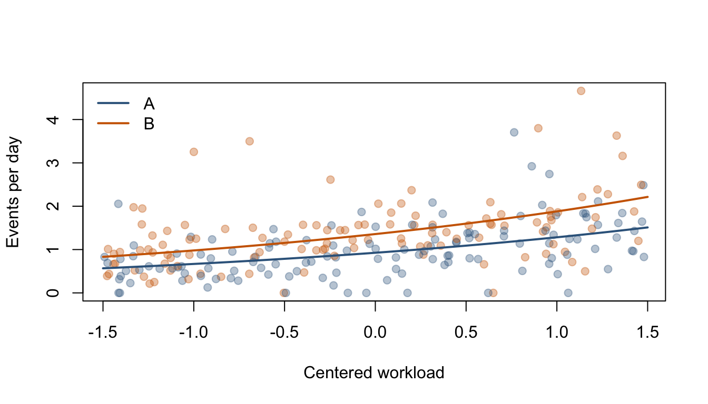

The same design matrix can represent continuous predictors, groups, interactions, and experimental comparisons. What changes when the response is a binary outcome or an event count? A generalized linear model (GLM) retains the linear predictor and changes the response distribution and its connection to the conditional mean.
Learning objectives. Choose a response family and link, interpret logistic and Poisson coefficients, obtain fitted probabilities or rates, compare nested models, and recognize when the basic model is inadequate. The core unit takes two lectures, followed by an integrated case in the final class.
11.1 From the normal linear model to GLMs
The normal linear model uses \(\mathbb{E}(Y_i\mid x_i)=x_i^\top\beta\) and constant conditional variance. A binary outcome instead has a probability between zero and one, while a count is nonnegative and often becomes more variable as its mean increases.
Definition 11.1 (Components of a Generalized Linear Model) For conditionally independent observations, specify a response distribution, a linear predictor \(\eta_i=x_i^\top\beta\), and a link function \(g\) satisfying
The chosen family also specifies how the conditional variance depends on the mean and, when applicable, a dispersion parameter.
Response
Conditional distribution
Link
Conditional mean
Continuous
Gaussian
identity
\(\mu_i=x_i^\top\beta\)
Binary
Bernoulli
logit
\(\pi_i=\{1+\exp(-x_i^\top\beta)\}^{-1}\)
Count
Poisson
log
\(\mu_i=\exp(x_i^\top\beta)\)
What stays the same? Building \(X\), representing factors and interactions, defining a comparison, and checking the observational unit remain essential. The Gaussian identity-link GLM recovers the ordinary normal linear model.
What changes? The mean can be nonlinear in \(x\), the variance need not be constant, and estimation generally uses likelihood rather than minimizing unweighted SSE. The link transforms the conditional mean; it does not require transforming each observed response. This matters when the data contain zeros.
ImportantGLM and GLS address different extensions
GLM means generalized linear model and concerns the response family and mean link. GLS means generalized least squares and concerns a covariance model for linear-mean regression. A standard independent-observation GLM does not automatically account for repeated observations on the same subject. Correlated-error GLS is in an optional appendix.
11.2 Logistic regression: probabilities and odds
For \(Y_i\mid x_i\sim\operatorname{Bernoulli}(\pi_i)\), the conditional variance is \(\pi_i(1-\pi_i)\). Logistic regression specifies
Interpretation. In a model without an interaction involving \(x_j\), a one-unit increase in \(x_j\), holding other predictors fixed, multiplies the odds by \(\exp(\beta_j)\). It does not multiply the probability by that number, and it does not give a constant probability difference. An interaction makes the corresponding odds ratio depend on the interacting predictor.
Example 11.1 (The Same Odds Ratio Can Imply Different Probability Changes) An odds ratio of 2 changes a baseline probability of 0.10 to \(2(0.10)/(1-0.10+2(0.10))\approx0.182\). At a baseline probability of 0.50 it gives \(2(0.50)/(1-0.50+2(0.50))\approx0.667\). Report predicted probabilities for meaningful predictor values when communicating the result.
Simulated example. Imagine a binary completion outcome, a centered baseline score, and a group indicator. The following data are simulated to illustrate the model; they are not observations from a real study.
Call:
glm(formula = completed ~ score + group, family = binomial(link = "logit"),
data = binary)
Coefficients:
Estimate Std. Error z value Pr(>|z|)
(Intercept) -0.2905 0.1932 -1.504 0.133
score 0.6982 0.1262 5.531 3.19e-08 ***
groupTreatment 0.2101 0.2818 0.746 0.456
---
Signif. codes: 0 '***' 0.001 '**' 0.01 '*' 0.05 '.' 0.1 ' ' 1
(Dispersion parameter for binomial family taken to be 1)
Null deviance: 330.31 on 239 degrees of freedom
Residual deviance: 295.04 on 237 degrees of freedom
AIC: 301.04
Number of Fisher Scoring iterations: 4
Coefficient intervals and fitted probabilities. The intervals below are approximate Wald intervals. Exponentiating the intercept gives baseline odds at score zero in the reference group; exponentiating the remaining coefficients gives the corresponding conditional odds ratios for this additive model.
Show R code
b <-coef(fit_logit)se <-sqrt(diag(vcov(fit_logit)))exp(cbind(estimate = b, lower = b -qnorm(0.975) * se,upper = b +qnorm(0.975) * se))
Figure 11.1: Fitted completion probabilities with approximate pointwise 95% confidence bands. Group differences on the probability scale vary with the baseline score.
NoteConfidence for a probability is not prediction of an individual outcome
These bands quantify uncertainty in the fitted conditional probability. An individual future outcome is still either zero or one. The Gaussian prediction-interval formula from Chapter 3 does not transfer directly to a Bernoulli outcome. The bands are pointwise, not simultaneous bands over the entire score range.
11.3 Poisson regression: counts, rates, and exposure
For a Poisson outcome, \(\mathbb{E}(Y_i\mid x_i)=\operatorname{Var}(Y_i\mid x_i)=\mu_i\). With a log link, \(\log\mu_i=x_i^\top\beta\), ensuring positive fitted means.
Counts versus rates. Units may be observed for different lengths of time. If \(t_i>0\) is the known exposure, model the rate \(\lambda_i\) using
The term \(\log t_i\) is an offset with coefficient fixed at one. Under this rate model, doubling exposure doubles the expected count while leaving the rate unchanged. For an additive log-rate model, \(\exp(\beta_j)\) is a conditional rate ratio for a one-unit increase in \(x_j\).
ImportantA log link does not mean taking log of the observed count
A Poisson GLM models \(\log\{\mathbb{E}(Y_i\mid x_i)\}\). It can use zero counts directly. Replacing the response with \(\log(Y_i+1)\) creates a different model with a different target and is not an equivalent implementation.
Simulated example. Suppose sites have different exposure times, a baseline workload, and two service protocols. Here exposure is measured in days, so the model’s rate is events per day.
Call:
glm(formula = events ~ workload + protocol + offset(log(exposure)),
family = poisson(link = "log"), data = counts)
Coefficients:
Estimate Std. Error z value Pr(>|z|)
(Intercept) -0.07682 0.04370 -1.758 0.0787 .
workload 0.32626 0.03278 9.954 < 2e-16 ***
protocolB 0.38246 0.05723 6.683 2.34e-11 ***
---
Signif. codes: 0 '***' 0.001 '**' 0.01 '*' 0.05 '.' 0.1 ' ' 1
(Dispersion parameter for poisson family taken to be 1)
Null deviance: 366.12 on 239 degrees of freedom
Residual deviance: 225.30 on 237 degrees of freedom
AIC: 993.2
Number of Fisher Scoring iterations: 4
For a one-day exposure, a fitted expected count is also a fitted daily rate. Use the original exposure for expected counts over the original observation periods.
cols <-c(A ="steelblue4", B ="darkorange3")plot(counts$workload, counts$events / counts$exposure, pch =19,col =adjustcolor(cols[as.character(counts$protocol)], 0.35),xlab ="Centered workload", ylab ="Events per day")for (g inlevels(counts$protocol)) { z <- new_counts[new_counts$protocol == g, ]lines(z$workload, z$rate, col = cols[g], lwd =2)}legend("topleft", legend =names(cols), col = cols, lwd =2, bty ="n")

Figure 11.2: Observed events per exposure day and fitted conditional rates. Different exposure times make the observed rates unequally variable; the model fits counts with a log-exposure offset.
11.4 Inference and model checks
From sums of squares to likelihood. OLS compares residual sums of squares. In a GLM, the likelihood measures how well the fitted conditional distribution accounts for the observations. Deviance measures lack of fit relative to a saturated model; for the binomial and Poisson models here, a difference in deviances equals twice the difference in maximized log likelihoods.
Theorem 11.1 (Approximate Likelihood-Ratio Test) For nested, correctly specified binomial or Poisson GLMs fitted to the same responses and observations, let the full model add \(r\) identifiable parameters. Under the reduced model and standard regularity conditions, including an interior true parameter and finite, regular maximum-likelihood estimates,
This is an asymptotic approximation, not the exact finite-sample F test of the normal linear model. Separation, sparse data, or boundary problems can invalidate the usual approximation.
Show R code
fit_logit_reduced <-glm(completed ~ score,family =binomial(), data = binary)anova(fit_logit_reduced, fit_logit, test ="LRT")
Analysis of Deviance Table
Model 1: completed ~ score
Model 2: completed ~ score + group
Resid. Df Resid. Dev Df Deviance Pr(>Chi)
1 238 295.60
2 237 295.04 1 0.55759 0.4552
Show R code
fit_pois_reduced <-glm(events ~ workload +offset(log(exposure)),family =poisson(), data = counts)anova(fit_pois_reduced, fit_pois, test ="LRT")
In each comparison, state the group or protocol question before reading the p-value. Keep the response, observations, exposure definition, and relevant likelihood assumptions comparable. For estimated-dispersion quasi models, the Poisson/binomial chi-square rule is not automatically appropriate; see R’s analysis-of-deviance documentation.
Check the model in the units of the question.
Question
What to inspect
Is the observation unit independent?
Repeated subjects, sites, clustering, and time order; a different family alone does not remove dependence.
Is the mean structure reasonable?
Curvature, interactions, fitted probabilities or rates across the observed predictor range.
Is the logistic fit regular?
Convergence warnings, sparse predictor patterns, very large coefficients/SEs, and separation.
Is a Poisson variance plausible?
Pearson residuals, unusually variable counts conditional on predictors, and unexplained heterogeneity.
Will predictions transfer?
Held-out loss and observed-versus-predicted summaries in a split that matches future use.
For a Poisson fit, the Pearson statistic divided by residual degrees of freedom is a useful rough dispersion diagnostic:
Show R code
pearson_dispersion <-sum(residuals(fit_pois, type ="pearson")^2) /df.residual(fit_pois)pearson_dispersion
[1] 0.9579286
A value substantially above one can signal overdispersion, missing mean structure, dependence, or other misspecification. It is not a stand-alone proof of a particular alternative model, especially with sparse counts. Recognizing when the basic model is inadequate is required; negative-binomial, quasi-likelihood, zero-inflated, and mixed-model remedies are beyond this introductory unit.
A simple held-out probability check. The Brier score is the mean squared difference between a predicted probability and a binary outcome. The following split evaluates a prespecified logistic model and an intercept-only baseline. Both are fitted on the training set.
A single small split is noisy. Use it to understand the evaluation procedure, not to assert that one model universally dominates another. A classification accuracy at one threshold does not summarize the quality of predicted probabilities.
Explain which GLM component changes when moving from Gaussian OLS to logistic regression, and which parts of the design matrix can remain the same.
Convert an odds ratio of 1.5 into a new probability for baseline probabilities 0.10 and 0.60. Explain why the probability differences differ.
Explain why exposure belongs in the Poisson example as an offset rather than an ordinary predictor with an estimated coefficient under the proportional-exposure model.
State the null hypothesis tested by each R model comparison. Explain why the reference distribution differs from Chapter 4’s F test.
Write a one-page analysis: define the observational unit, choose a response family/link, report a probability or rate comparison with uncertainty, and identify one model limitation. Separate uncertainty about a conditional mean from variation in a future observation.